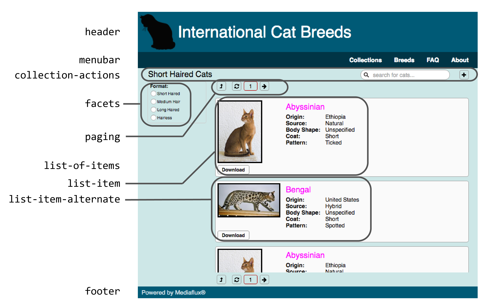

original-gwt-html directory contains raw
html generated by the current portal plugin, for several Cat Portal
pages including the cat list page.
html-components directory contains three
componentised versions of the cat list page.
The components extracted are indicated in this diagram:

These are my guesses at page entities managed by the GWT code.
Each of the three componentised versions includes a cat-list.source
file that contains the page layout and shows where to include the
component files. A shell script convert.sh (for
bash) inserts the
component files into the right places, to produce
cat-list.source.html which is the complete page (this output
is aready in the repo, so you don't need to run the script to see the
result).
html-components/old contains the
original GWT generated HTML, split across several files. The HTML
is not changed from GWT's generated code, aside from splitting out
components, and a minor path tweak to the Font Awesome path so that
it continues to work without a MF server.
HTML for each component is in the
./components directory.
html-components/new contains the same
files as the componentised original version, but with new content.
New HTML for each component is in the
./components directory.
E.g here is the HTML built by GWT for the menu bar:
<table cellspacing="0" cellpadding="0" class="arc_11_base_widget_1 style_22" style="height: 40px; width: 1143px;">
<tbody>
<tr>
<td align="left" style="vertical-align: top;">
<div class="arc_11_base_widget_1 arc_12_SimplePanel" style="width: 722px;"></div>
</td>
<td align="left" style="vertical-align: top;">
<table cellspacing="0" cellpadding="0" class="arc_11_base_widget_1" style="height: 40px; margin-right: 94px;">
<tbody>
<tr>
<td align="left" style="vertical-align: middle;">
<div class="arc_11_base_widget_1 arc_15_PortalGUI_MenuItem" style="cursor: default;">Collections</div>
</td>
<td align="left" style="vertical-align: middle;">
<div class="arc_11_base_widget_1 arc_15_PortalGUI_MenuItem" style="cursor: default;">Breeds</div>
</td>
<td align="left" style="vertical-align: middle;">
<div class="arc_11_base_widget_1 arc_15_PortalGUI_MenuItem" style="cursor: default;">FAQ</div>
</td>
<td align="left" style="vertical-align: middle;">
<div class="arc_11_base_widget_1 arc_15_PortalGUI_MenuItem" style="cursor: default;">About</div>
</td>
</tr>
</tbody>
</table>
</td>
</tr>
</tbody>
</table>